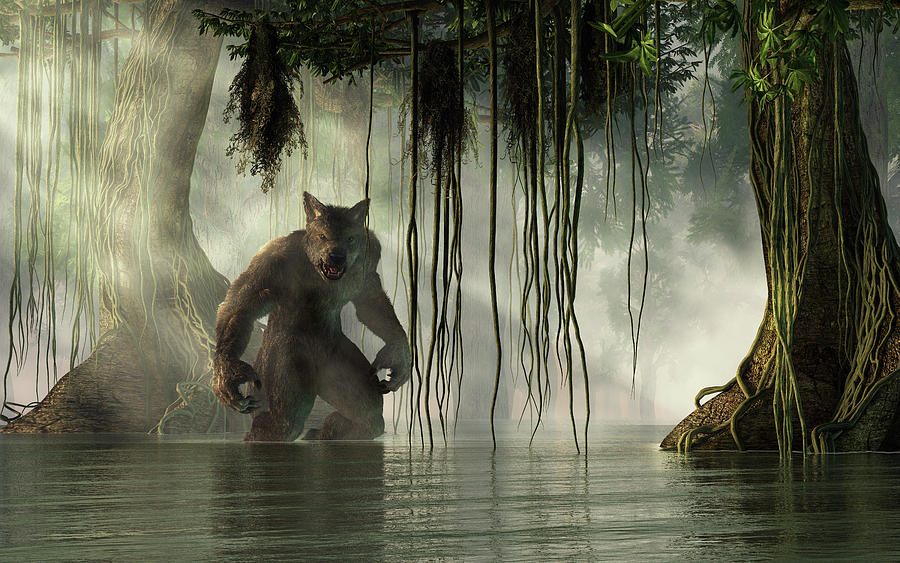
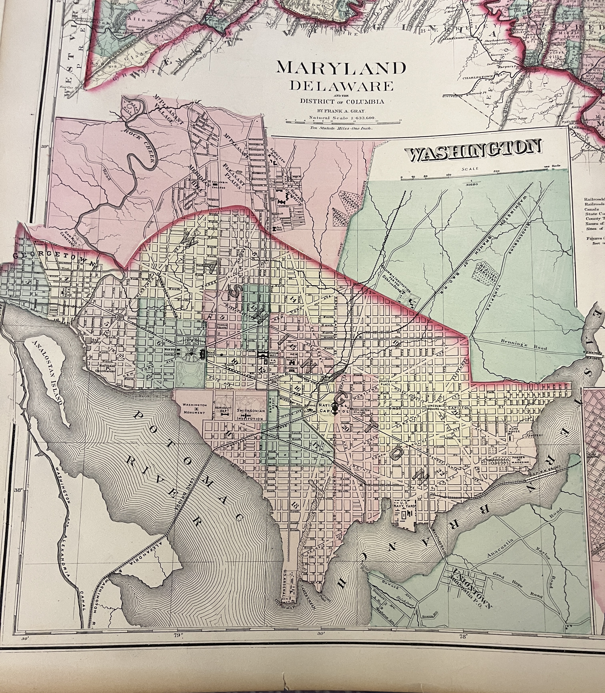
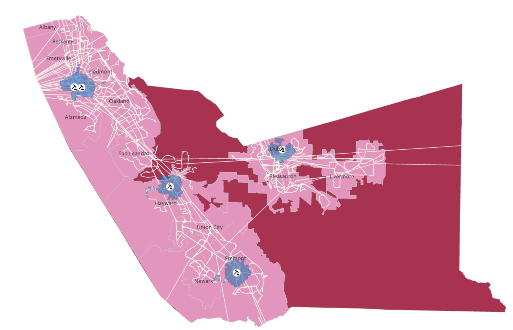
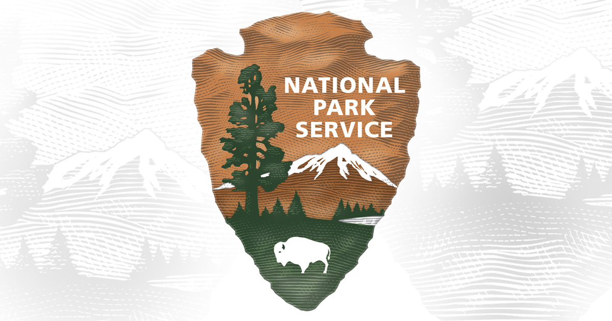

Portfolio
GIS projects across spatial analysis, web mapping, remote sensing, and data visualisation.

Measuring Glacier Loss on Yulong Snow Mountain
Quantified glacial retreat using Landsat imagery and NDSI analysis in ENVI, applying supervised classification to measure environmental change over time.
Wisconsin's 118th Congressional District Evaluation
Evaluated the geometry and representation of Wisconsin's 118th congressional districts, incorporating census population data to decide if partisan Gerrymandering has occured.

The Beast of Louisiana's Swamp
An interactive StoryMap exploring habitat suitability analysis for the Rougarou, a mythical creature rumored to lurk in Louisiana's swamps.

My Blind Date with a Map
A StoryMap completed for my cartography course, discovering an unknown map through visual design principles, historical context clues, and spatial interpretation.

Public Transit Analysis for State Court Accessibility
Assessing public transportation accessibility for jurors across Alameda San Bernadino, and Fresno. ACS demographic data and Network analysis are used to identify disparities in access to California state courts.

What Creates a Historic NBA Scoring Performance?
Examined stats associated with the highest individual scoring performances in NBA history using Python, Pandas, and Matplotlib.

NPS Heritage Documentation — Washington D.C.
Created and verified geospatial data for 1,000+ HABS/HAER/HALS-documented historic features across DC, working within an enterprise geodatabase for the National Park Service.
No projects match that filter yet — check back soon.